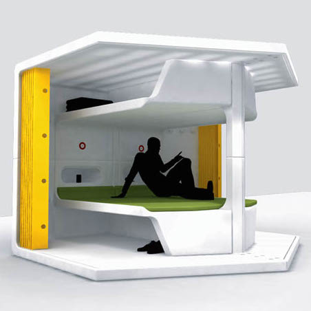

Modules who? Classes what? What do I use?!
What is a class?
Classes are a very useful tool that can be used in just about anything in Ruby, and on that note like anything else in ruby a class is an object. Classes are used to create new objects that all share similar traits. See example below. You could create a class for pets, an address book, students, worker info, or Characters in a video game. For more information on just classes see my blog post Classes in Ruby: A fun Example.
This is a class
This is a class inheriting
What is a module?
Modules are a way of grouping together methods, classes, and constants. Modules give you two major benefits. Modules provide a namespace and prevent name clashes. Modules implement the mixin facility. Modules define a namespace, a sandbox in which your methods and constants can play without having to worry about being stepped on by other methods and constants. For for information goto Tutorials Point and read their information about modules and mixins.
This is a module
Modules who? Classes what? What do I use?!
For me it comes down to readability and practicality. Modules have the ability to provide methods that you can use across multiple classes, where as classes can only inherit from once class (their super class). Think of it this way classes are about creating objects; modules are about functions. You use a module when you have shared methods across multiple classes and want to avoid messy inheritance.
This is a class including a module
Stereotype Threat: A Direct Attack

Breaksdown of Relationships
Just for fun! Modular Living